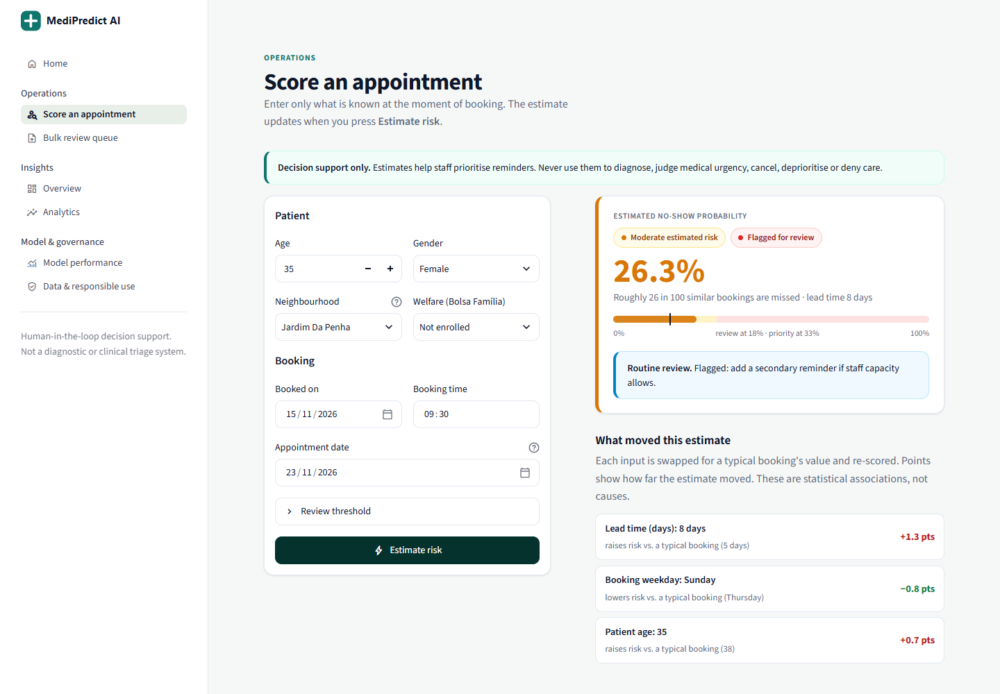
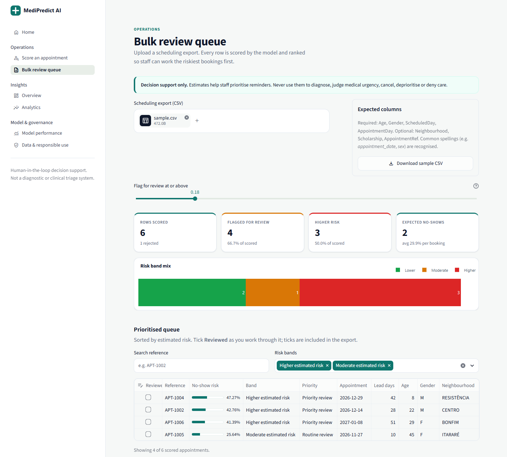
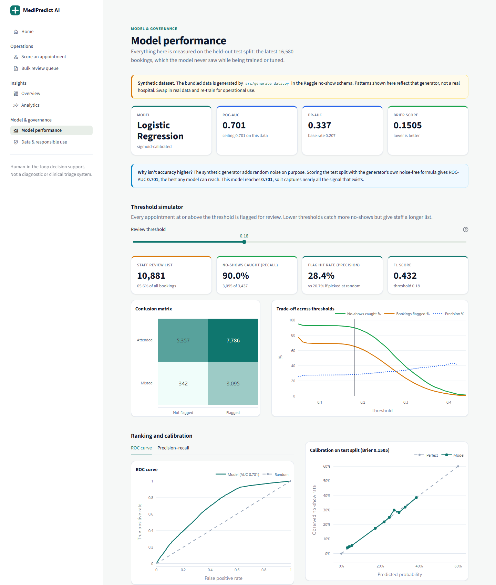
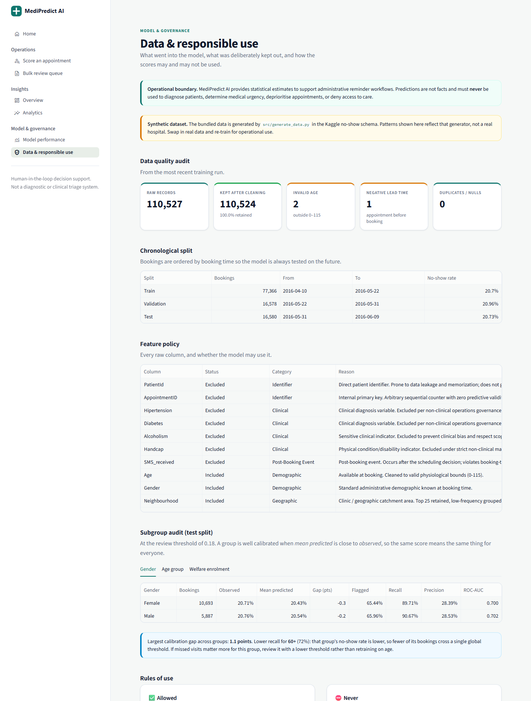

Spot likely no-shows while there's still time to send a reminder
MediPredict AI estimates how likely a booked hospital appointment is to be missed, using only facts known at booking. Staff use the calibrated estimate to decide who gets a reminder call first. Nothing is cancelled or denied automatically.
Results on held-out data
Measured once on the latest 15% of bookings, which the model never saw. Loaded from models/model_metadata.json.
| Risk band | Estimated probability | Test bookings | Actually missed | Suggested action |
|---|---|---|---|---|
| Lower | < 18% | 5,699 | 6.0% | Standard automated reminder |
| Moderate | 18–33% | 8,423 | 25.8% | Extra reminder if capacity allows |
| Higher | ≥ 33% | 2,458 | 37.4% | Priority staff call ~48h before |
How it works
Designed so a reviewer can trust each number.
Booking-time facts only
Age, gender, neighbourhood, welfare enrolment, booking time and lead time. Identifiers, diagnoses and SMS status are blocked in code.
Tested on the future
Chronological 70 / 15 / 15 split by booking time with no overlap. The test split is scored once.
Calibrated and audited
Sigmoid calibration, reliability curve on test, permutation importance, and per-group calibration by age, gender and welfare.
Explained per booking
Each input is swapped for a typical booking's value and re-scored, showing what moved the estimate.
Screens
Streamlit app, responsive from phone to desktop.




Run it
git clone https://github.com/madrewarparth/MediPredict-AI.git
cd MediPredict-AI
pip install -r requirements.txt
streamlit run app.py